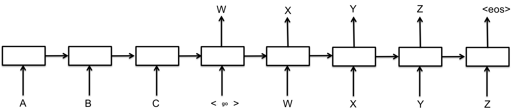
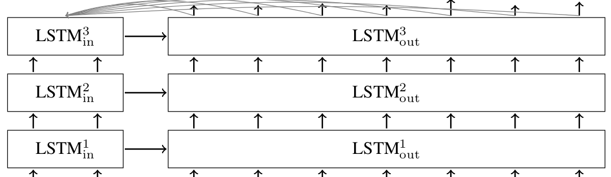

递归神经网络（recurrent neural network）能够构建模型。这引发了一个很有趣的问题，我们可以对一些输入的单词进行调整，并产生有意义的响应吗？例如，我们可以训练一个神经网络来从英语翻译成法语吗？答案是可以的。
从Github上clone这个，键入下面的命令就可以开始训练翻译模型了
|
|
它将从WMT’15网站下载英文到法文的翻译数据 ，准备训练和训练。大约需要20GB的磁盘空间。
Sequence-to-sequence基础
基本的seq2seq模型包含了两个RNN，解码器和编码器，如下图所示：

每个矩形都表示着RNN的一个核，通常是GRU（Gated recurrent units）或者长短期记忆（LSTM）核。编码器和解码器可以使用相同的权重，或者，更常见的是，编码器和解码器分别使用不同的参数。多层神经网络已经成功地用于序列序列模型之中了。
在上面所说的模型之中，每个输入都会被编码成一个定长度的矢量,这也是唯一的传递入解码器的参数了。为了让解码器更直接的访问输入的参数，我们引入了一种行为，你可以在这里查到有关的信息。简而言之，在每个解码的阶段，这种方法可以让解码器查看输入的参数。一个多层的seq2seq的LSTM神经网络的处理行为就如图所示

TensorFlow的seq2seq库
正如你所知道的，seq2seq有多种多样的形式，使用了不同的RNN核，但是万变不离其宗，其总是接受一个编码和解码的输入。TensorFlow也为此创建了一个模型：tensorflow/tensorflow/python/ops/seq2seq.py，最基本的RNN编码-解码器就像是这样子的：
在上述的seq2seq模型的参数之中，encoder_inputs是给予编码器数据的张量。比如在图中的A、B和C。相应的，decoder_inputs则是代表了给予解码器的输入。比如GO，W，X，Y和Z。
cell这个参数则是表示的是tf.contrib.rnn.RNNCell的一个实例，也就是seq2seq使用的RNN核，你可以使用诸如GRUCell或者LSTMCell甚至是你自己定义的核。进而言之，tf.contrib.rnn提供了一系列的构建多层RNN的核的封装并且为输入输出添加一个dropout来防止过拟合。你可以在RNN指导看到如何这样做。
basic_rnn_seq2seq的调用会返回两个参数output和state。他们都是和decoder_inputs同等长度的张量。望文生义，output代表着每层解码器的输出，比如图中的W，X，Y，Z，EOS，而state则代表的是每个时间步长解码器的内部状态。
在大量的seq2seq模型的应用之中，在t时输出的解码器的输出会被反馈，并且成为t+1时的编码器的输入。在测试的时候，当我们开始对一个序列进行解码的时候，这也是我们构建一个序列的表现。在训练的时候，通常我们都会同时提供正确的输入和输出，即使解码器之前输出的是一个错误的结果。在seq2seq.py之中的函数就支持feed_previous这个参数。举例而言，我们就可以使用嵌套的RNN模型。
|
|
在embedding_rnn_seq2seq模型之中，所有的输入参数（包括encoder_inputs和decoder_inputs）都是整数的离散张量。他们会按照word2vec模型变成一个密集的表达。但是构建嵌套向量则需要离散值的最多的个数，分别是在编码端的num_encoder_symbols和解码端decoder_inputs两个参数。
在上面的代码之中，我们设置了feed_previous这个参数为False，这就意味着解码器会使用decoder_inputs这个张量。但是如果我们将其置为True，那么程序就只会使用第一个参数了，其他参数都会被无视，然后上一次的解码器输出将会被使用于下一次训练。这通常会被用于训练模型,让系统变得更加稳健。
另外一个很重要的参数就是output_projection了,嵌入模型的输出就会按照num_decoder_symbols（它们表示每个生成的符号的对数）大小的张量，当我们要训练一个样本集很大的模型的时候,直接存储这些张量变得不切实际了。这个时候返回一些小的张量才是明智之举，之后这些小张量就会被转换（project）成一个大的张量,这个时候就是out_projection的使用了。这就使得seq2seq能够使用softmax来确定loss了.这一点在Jean et. al., 2014里面说明的很清楚了
除了basic_rnn_seq2seq与embedding_rnn_seq2seq之外还有一些seq2seq的模型，其情况也是类似的，我们也不会很详细的描述了。
基于神经网络的翻译模型
核心的seq2seq在tensorflow/tensorflow/python/ops/seq2seq.py之中就被构建了，当然有一些很值得注意的小技巧，这些技巧在入门之中也是值得被应用的。
softmax采样以及output_project
所以正如上面所说的，我们将会使用softmax方法来处理大规模的词汇。softmax和out_project的实现将会在seq2seq_model.py看到：
|
|
首先，请注意，如果样本数（默认为512）小于目标词汇大小，我们只构造一个采样softmax。对于小于512的词汇，只是使用标准的softmax损失可能是一个更好的主意。
正如你所见，我们构造了一个输出的工程，其包含了一个权重矩阵和偏差向量。如果output_project不为空，RNN核将会返回一个样本长度size的矢量而不是target_vocab_size,在此之后，正如seq2seq_model.py所示，你需要乘上权重矩阵并且加上偏差向量。
|
|
bucking和填充
除了采样的softmax方法外，我们的翻译工作也让我们开始使用桶（bucket）的方法，这也是一种对于变长度句子翻译的很好用的工具。当我们想从英文翻译到法语的时候，输入的英文的长度为L1而输出法语的长度则为L2。而我们现在已知英文从encoder_input进入法语从decoder_input输出（其标识有GO的前缀）,这样我们就需要一个(L1,L2+1)长的seq2seq模型，来对每一对英法文进行处理.这将导致一个庞大的图形，由许多非常相似的子图组成。另一方面，我们可以用特殊的PAD符号来填充每个句子。那么我们只需要一个seq2seq模型，用于填充长度。然而对于一些非常短的语句和词汇，我们的模型将会变得低效，编码和解码太多的PAD填充符会变得很没有意义。
似乎我们需要在对过短和过长句子的处理之间找到一个平衡点,我们会使用不同长度的桶，并且在桶上放置不同的句子并且填充他们至桶满。在translate.py之中，我们会使用以下的默认长度的桶。
|
|
这意味着如果输入是具有3个令牌的英文句子，并且相应的输出是具有6个令牌的法语句子，那么它们将被放入第一个数据桶，并填充到编码器输入的长度为5，解码器输入的长度为10 。如果我们有一个8个令牌的英文句子，相应的法语句子有18个令牌，那么它们将不适用于（10,15）桶，所以（20,25）桶将被使用，即英文句子被填补到20个长度，而法国一到25个长度。
请记住，当构建解码器输入时，我们将特殊GO符号添加到到了里面。这是在seq2seq_model.py的get_batch()函数中完成的，其也会反转英语的输入。正如Sutskever所说，这有助于改善机器学习后的结果。现在有句英文I go.就会被分解为["I", "go", "."]，其将作为编码器的输入，而输出Je vais.则会被分解为["Je", "vais", "."]。其会被放入(5,10)的桶中。所以经过反转并且田冲后的输入就是[PAD PAD "." "go" "I"]，而输出则是[GO "Je" "vais" "." EOS PAD PAD PAD PAD PAD]。
运行
作者懒得翻译了，直接去Tensorflow网上找吧。。。点我前往